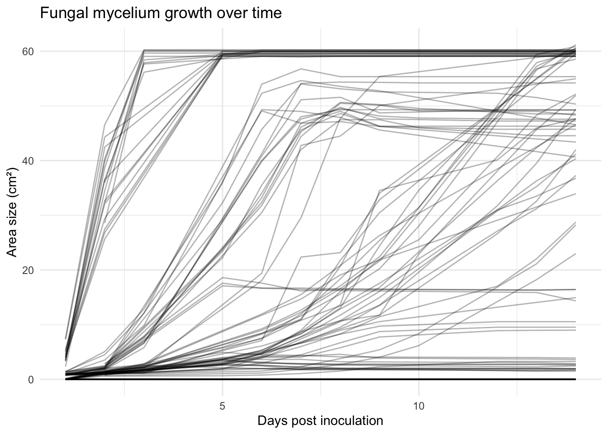

Data from a laboratory assay investigating the growth of fungal species on human faeces and their effect on faecal physicochemical properties and bacterial indicator concentrations over 14 days post inoculation. Five fungal species were tested alongside untreated controls: Pleurotus ostreatus (MG1015, MG1010), Ganoderma lucidum, Stropharia fimicola (F35), and Trichoderma harzianum (T22).
Installation
You can install the development version of fungalgrowth from GitHub with:
# install.packages("devtools")
devtools::install_github("global-health-engineering/fungalgrowth")
## Run the following code in console if you don't have the packages
## install.packages(c("dplyr", "knitr", "readr", "stringr", "gt", "kableExtra"))
library(dplyr)
library(knitr)
library(readr)
library(stringr)
library(gt)
library(kableExtra)Alternatively, you can download the individual datasets as a CSV or XLSX file from the table below.
- Click Download CSV. A window opens that displays the CSV in your browser.
- Right-click anywhere inside the window and select “Save Page As…”.
- Save the file in a folder of your choice.
| dataset | CSV | XLSX |
|---|---|---|
| experiment_setup | Download CSV | Download XLSX |
| experiment_endpoint | Download CSV | Download XLSX |
| faecal_measurements | Download CSV | Download XLSX |
| inoculum_species | Download CSV | Download XLSX |
| fungal_growth | Download CSV | Download XLSX |
Data
The package provides access to five datasets that together document the experimental design, the characterization of the inputs (faeces samples and fungal inocula), the time-series of mycelium growth observations, and the endpoint measurements at 14 days post inoculation. Each dataset can be loaded directly after attaching the package.
experiment_setup
The dataset experiment_setup contains data about the experimental setup recorded at 0 days post inoculation (0 dpi), linking each treatment unit to its faeces sample and fungal inoculum along with the initial faeces wet weight on the plate. It has 132 observations and 4 variables
experiment_setup |>
head(3) |>
gt::gt() |>
gt::as_raw_html()| id_treatment | id_inoc | id_faeces | wet_weight |
|---|---|---|---|
For an overview of the variable names, see the following table.
| variable_name | variable_type | unit | description |
|---|---|---|---|
| id_treatment | numeric | NA | Unique identifier for each experimental treatment unit. |
| id_inoc | numeric | NA | Identifier for the fungal inoculum used in this treatment; joins to inoculum_species. |
| id_faeces | numeric | NA | Identifier for the faeces sample used in this treatment; joins to faecal_measurements. |
| wet_weight | numeric | g | Wet weight of the faeces sample at day 0 post inoculation (0 dpi). |
experiment_endpoint
The dataset experiment_endpoint contains data about the experimental measurements taken at 14 days post inoculation (14 dpi), including faeces wet and dry weights, pH, and bacterial indicator concentrations (E. coli, Enterococcus, total plate count) for each treatment unit. It has 132 observations and 7 variables
experiment_endpoint |>
head(3) |>
gt::gt() |>
gt::as_raw_html()| id_treatment | wet_weight | dry_weight | ecoli_concentration | enterococcus_concentration | total_plate_count_concentration | ph |
|---|---|---|---|---|---|---|
For an overview of the variable names, see the following table.
| variable_name | variable_type | unit | description |
|---|---|---|---|
| id_treatment | numeric | NA | Unique identifier for each experimental treatment unit. |
| wet_weight | numeric | g | Wet weight of the faeces sample at day 14 post inoculation (14 dpi). |
| dry_weight | numeric | g | Dry weight of the faeces sample at day 14 post inoculation (14 dpi); derived from wet weight and water content. |
| ecoli_concentration | numeric | CFU/g | E. coli concentration at day 14 post inoculation (14 dpi). |
| enterococcus_concentration | numeric | CFU/g | Enterococcus concentration at day 14 post inoculation (14 dpi). |
| total_plate_count_concentration | numeric | CFU/g | Total plate count concentration at day 14 post inoculation (14 dpi). |
| ph | numeric | NA | pH of the faeces sample at day 14 post inoculation (14 dpi). |
faecal_measurements
The dataset faecal_measurements contains data about the characterization of each faeces sample at 0 days post inoculation (0 dpi), including total faeces weight, additive composition, pH, water content, and bacterial indicator concentrations (E. coli, Enterococcus, total plate count) averaged across three replicates. It has 6 observations and 10 variables
faecal_measurements |>
head(3) |>
gt::gt() |>
gt::as_raw_html()| id_faeces | weight_total | weight_additive | additive | additive_ratio | ph | water_content_mean | ecoli_concentration_mean | enterococcus_concentration_mean | total_plate_count_concentration_mean |
|---|---|---|---|---|---|---|---|---|---|
For an overview of the variable names, see the following table.
| variable_name | variable_type | unit | description |
|---|---|---|---|
| id_faeces | numeric | NA | Identifier for the faeces sample. |
| weight_total | numeric | g | Total weight of faeces collected before additive at 0 dpi. |
| weight_additive | numeric | g | Weight of additive mixed into the faeces at 0 dpi. |
| additive | character | NA | Type of additive mixed into the faeces at 0 dpi. |
| additive_ratio | numeric | proportion | Proportion of additive relative to total mixture weight at 0 dpi. |
| ph | numeric | NA | pH of the faeces-additive mixture at collection (0 dpi). |
| water_content_mean | numeric | proportion | Mean water content of the faeces sample at day 0 post inoculation (0 dpi); mean of 3 replicates. |
| ecoli_concentration_mean | numeric | CFU/g | Mean E. coli concentration at day 0 post inoculation (0 dpi); mean of 3 replicates. |
| enterococcus_concentration_mean | numeric | CFU/g | Mean Enterococcus concentration at day 0 post inoculation (0 dpi); mean of 3 replicates. |
| total_plate_count_concentration_mean | numeric | CFU/g | Mean total plate count concentration at day 0 post inoculation (0 dpi); mean of 3 replicates. |
inoculum_species
The dataset inoculum_species contains data about the fungal inocula used in the assay, providing the mapping from each inoculum identifier to the fungal species. It has 44 observations and 2 variables
inoculum_species |>
head(3) |>
gt::gt() |>
gt::as_raw_html()| id_inoc | species |
|---|---|
For an overview of the variable names, see the following table.
| variable_name | variable_type | unit | description |
|---|---|---|---|
| id_inoc | numeric | NA | Identifier for the fungal inoculum. |
| species | character | NA | Fungal species used as inoculum. |
fungal_growth
The dataset fungal_growth contains time-series observations of fungal mycelium growth on each treatment unit, with one row per treatment-observation date. Variables include mycelium area, contamination metrics, and growth descriptors recorded at each timepoint. It has 990 observations and 8 variables
fungal_growth |>
head(3) |>
gt::gt() |>
gt::as_raw_html()| id_treatment | date | dpi | area_size | nr_contaminations | total_contamination_area | reproductive_structures | growth_description |
|---|---|---|---|---|---|---|---|
For an overview of the variable names, see the following table.
| variable_name | variable_type | unit | description |
|---|---|---|---|
| id_treatment | numeric | NA | Identifier for the experimental treatment unit; joins to experiment_setup and experiment_endpoint. |
| date | Date | NA | Date of the growth observation measurement. |
| dpi | integer | days | Days post inoculation; days elapsed between this measurement and the first measurement for this treatment. |
| area_size | numeric | cm2 | Area of fungal mycelium at the observation date. |
| nr_contaminations | numeric | NA | Number of macroscopically distinct contaminating fungi observed at this timepoint. |
| total_contamination_area | numeric | cm2 | Total area of contamination summed across all observed contamination spots at this timepoint. |
| reproductive_structures | numeric | NA | Coded indicator of reproductive structures observed at this timepoint. |
| growth_description | numeric | NA | Mycelium health score assessed on a 0-5 scale by a single unblinded operator: 0: no visible mycelium, 1: sparse/dying mycelium, 2: patchy growth with signs of decline, 3: healthy mycelium covering but with clear visible substrate , 4: dense, vigorous mycelium some substrate visible, 5: dense mycelium mat without any visible material below the mycelium. |
Example
library(fungalgrowth)
library(ggplot2)
ggplot(fungal_growth, aes(x = dpi, y = area_size, group = id_treatment)) +
geom_line(alpha = 0.3) +
labs(
title = "Fungal mycelium growth over time",
x = "Days post inoculation",
y = "Area size (cm²)"
) +
theme_minimal()
License
Data are available as CC-BY.
Citation
Please cite this package using:
citation("fungalgrowth")
#> To cite package 'fungalgrowth' in publications use:
#>
#> Peter J, Clavijo Daza A (2026). _fungalgrowth: Fungal Growth Assay on
#> Human Faeces_. R package version 0.0.0.9000,
#> <https://github.com/Global-Health-Engineering/fungalgrowth>.
#>
#> A BibTeX entry for LaTeX users is
#>
#> @Manual{,
#> title = {fungalgrowth: Fungal Growth Assay on Human Faeces},
#> author = {Jules Peter and Adriana {Clavijo Daza}},
#> year = {2026},
#> note = {R package version 0.0.0.9000},
#> url = {https://github.com/Global-Health-Engineering/fungalgrowth},
#> }